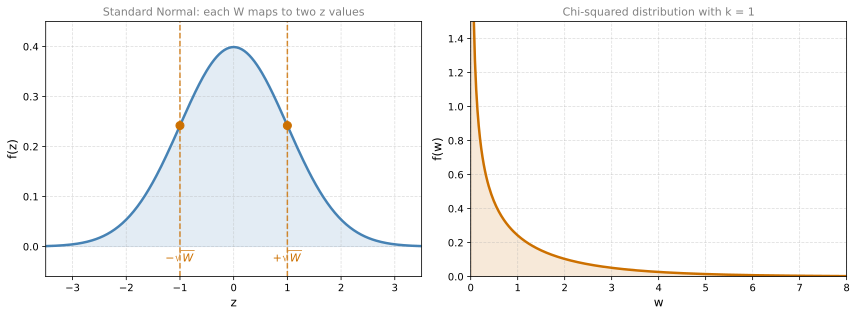
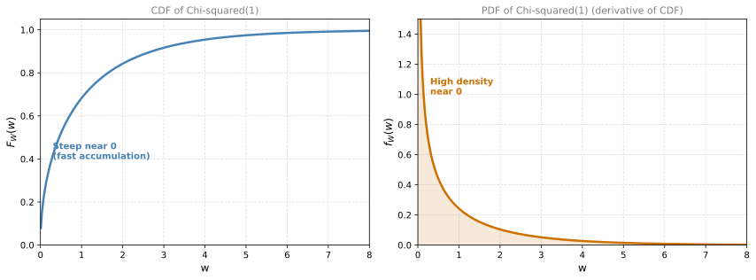
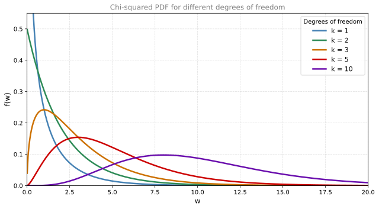

Chi-Squared Distribution
probability
Imagine you are transmitting bits between two antennas. You send the message 10010. The message travels through the air, which in this case is the…
Motivation: Noise Power in Communications
Imagine you are transmitting bits between two antennas. You send the message 10010. The message travels through the air, which in this case is the communication channel. The channel has noise that will affect the message you send. This noise can come from different sources: interference from other devices, Wi-Fi router obstructions (walls, trees, buildings), conditions like rain or high humidity, electrical interference from nearby parallel lines, and many other factors.
You receive the message 10010 plus some noise that affected the signal. Call the noise \(Z\), which has a random nature. One common assumption in communications is that the noise \(Z\) has a Gaussian distribution with mean \(\mu = 0\).
One measure that is very useful in communications is the noise power, which is roughly modeled by the square of the noise:
\[ W = Z^2 \]
This measure is important because it is associated with the variance (dispersion) of the noise and determines how hard it is to correctly interpret the received signal.
The big question is: what is the distribution of \(W\)?
Deriving the Chi-Squared Distribution (One Degree of Freedom)
For simplicity, assume that \(Z\) follows a standard normal distribution, \(Z \sim N(0, 1)\). We want to find the distribution of \(W = Z^2\).
Here is the key insight: each value of \(W\) can be achieved with two different values of \(Z\), namely \(-\sqrt{W}\) and \(+\sqrt{W}\). This is because squaring removes the sign.
The probability that \(W \leq w\) (the CDF of \(W\)) is the area under the standard normal PDF between \(-\sqrt{w}\) and \(+\sqrt{w}\):
\[ F_W(w) = P(W \leq w) = P(-\sqrt{w} \leq Z \leq \sqrt{w}) \]
Notice that for small values of \(w\), you gain area at a much quicker rate. This is because the Gaussian distribution concentrates probability around 0, so the region near the center has a lot of density packed in.
This distribution is known as the chi-squared distribution with one degree of freedom (chi is pronounced “kai”), written:
\[ W \sim \chi^2(1) \]
From CDF to PDF
Since the CDF is the integral of the PDF, you can find the PDF by taking the derivative of the CDF. The PDF is simply the slope of the CDF at each point.

The rate at which probability accumulates is large for small values of \(w\) and gets smaller and smaller as \(w\) increases. For small values of \(w\), the CDF is a very steep curve that grows quickly, but for larger values it grows slower and slower. This makes sense: squaring a standard normal variable produces values near 0 most often, because the normal distribution concentrates around 0.
More Degrees of Freedom
Now, what if you want the noise power accumulated over two transmissions? That means the total power is:
\[ W = Z_1^2 + Z_2^2 \]
where both \(Z_1\) and \(Z_2\) are independent standard normal variables. This is the chi-squared distribution with two degrees of freedom, \(\chi^2(2)\).
What about the power accumulated over five transmissions?
\[ W = Z_1^2 + Z_2^2 + Z_3^2 + Z_4^2 + Z_5^2 \]
That is a chi-squared distribution with five degrees of freedom, \(\chi^2(5)\).
General Definition
In general, for \(k\) independent standard normal variables:
\[ W = Z_1^2 + Z_2^2 + \cdots + Z_k^2 \sim \chi^2(k) \]
The parameter \(k\) is called the degrees of freedom. It tells you how many squared normal variables are being summed.

Notice that as \(k\) increases:
- The PDF becomes more spread out (the distribution has larger variance)
- The shape becomes more and more symmetrical (approaching a bell curve for large \(k\))
- The peak shifts to the right
This makes intuitive sense: you are adding more and more positive terms together, so the sum tends to be larger and more predictable.
Summary
| Property | Value |
|---|---|
| Definition | \(W = Z_1^2 + \cdots + Z_k^2\), where \(Z_i \sim N(0,1)\) independently |
| Parameter | \(k\) (degrees of freedom) |
| Support | \(w \geq 0\) (sum of squares is always non-negative) |
| Mean | \(k\) |
| Variance | \(2k\) |
| Notation | \(W \sim \chi^2(k)\) |
Review Questions
1. If \(Z \sim N(0, 1)\), what distribution does \(W = Z^2\) follow?
TipAnswer
\(W\) follows a chi-squared distribution with one degree of freedom, \(W \sim \chi^2(1)\).
1. Why does the chi-squared PDF have high density near \(w = 0\) when \(k = 1\)?
TipAnswer
Because the standard normal distribution concentrates most of its probability around \(Z = 0\). When you square values near 0, you get values of \(W\) near 0. So most of the probability mass of \(W = Z^2\) ends up near 0.
1. What is the chi-squared distribution with 5 degrees of freedom in terms of normal variables?
TipAnswer
It is the distribution of \(W = Z_1^2 + Z_2^2 + Z_3^2 + Z_4^2 + Z_5^2\), where each \(Z_i\) is an independent standard normal variable, \(Z_i \sim N(0, 1)\).
1. What happens to the shape of the chi-squared distribution as \(k\) increases?
TipAnswer
As \(k\) increases, the PDF becomes more spread out and more symmetrical, approaching a bell-curve shape. The peak also shifts to the right.
1. In the communications example, what does the “noise power” \(W = Z^2\) represent and why is it useful?
TipAnswer
The noise power is the square of the noise signal \(Z\). It is useful because it is associated with the variance (dispersion) of the noise and determines how difficult it is to correctly interpret the received signal. Larger noise power means harder signal detection.
Interactive Tool: PMF/PDF and CDF Explorer
Use this tool to explore the relationship between the PMF/PDF and CDF. Choose a distribution, adjust its parameters, and run experiments to compare theoretical and observed results. Toggle “Show CDF” to overlay the cumulative distribution function.
- Discrete - Binomial: Toss a coin \(n\) times with probability of heads \(p\). The variable \(X\) counts the number of heads. Run experiments to simulate many rounds of \(n\) tosses.
- Continuous - Uniform: A random number is picked with equal probability anywhere between \(a\) and \(b\). Think of it as a spinner that lands uniformly on an interval.
- Continuous - Normal: Values cluster around the mean \(\mu\) with spread controlled by \(\sigma\). Most values fall within a few \(\sigma\) of the mean. Think of it as measuring heights, temperatures, or measurement errors.
- Continuous - Chi-Squared: The sum of \(k\) squared standard normal variables. Controlled by degrees of freedom \(k\). Used in hypothesis testing and goodness-of-fit tests.